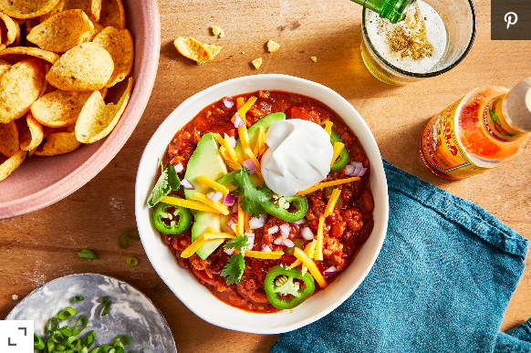

Chili

Easy and Delicious Homemade Chili
My friend's love of smokey chipotle peppers inspired this recipe. It comes together perfectly and is a unique
chili that will stand out against others. It is a spicy chili that at the same time is mellow. It gives you the
kick without the lingering burn like many chilis do.
This creamy and delicious chili will leave you wanting more.
Ingredients
- 2 pounds ground beef
- 1 pound bulk Italian sausage
- 1 large onion, diced
- 1 tablespoon minced garlic
- 2 (16 ounce) cans kidney beans, rinsed and drained
- 2 (16 ounce) cans chili beans, undrained
- 2 (14.5 ounce) cans diced tomatoes
- 2 (14.5 ounce) cans crushed tomatoes
- 2 ribs celery, chopped
- 1 green bell pepper, coarsely chopped
- ½ red bell pepper, chopped
- ½ (7 ounce) can chipotle chiles in adobo sauce, finely chopped
- ½ (3 ounce) package bacon bits
- 1 tablespoon chili sauce
- 1 tablespoon hot pepper sauce (such as Frank's RedHot®)
- 1 tablespoon chili powder
- 2 teaspoons brown sugar
- ¼ teaspoon ground cumin
- ¼ teaspoon salt
Steps
- Heat a large skillet over medium-high heat. Cook and stir beef and sausage in the hot skillet until some of
the fat renders, 2 to 3 minutes; add onion and garlic and continue to cook and stir until the meats are
browned and crumbly, 5 to 7 minutes more. Transfer beef mixture to a slow cooker.
- Stir kidney beans, chili beans, diced tomatoes, crushed tomatoes, celery, green bell pepper, red bell
pepper, chipotle chiles, bacon bits, chili sauce, hot pepper sauce, chili powder, brown sugar, cumin, and
salt with the beef mixture.
- Cook on Low until vegetables are completely tender but the celery retains a slight bit of firmness, 6 to 8
hours (or 3 to 4 hours on High).